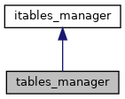

Класс реализации менеджера таблиц More...
#include <tables_manager.h>
Inheritance diagram for tables_manager:

Collaboration diagram for tables_manager:
Public Member Functions | |
| bool | contain_table (const std::string &name) override |
| Метод позволяет проверить содержится ли указанная таблица More... | |
| std::shared_ptr< table > | add_table (const std::string &name) override |
| Метод добавления таблицы с указанным именем More... | |
| std::shared_ptr< table > | get_table (const std::string &table_name) override |
| Метод получения таблицы More... | |
| void | remove_table (const std::string &table_name) override |
| Метод удаления таблицы More... | |
 Public Member Functions inherited from itables_manager Public Member Functions inherited from itables_manager | |
| virtual | ~itables_manager ()=default |
Detailed Description
Класс реализации менеджера таблиц
Member Function Documentation
◆ add_table()
|
overridevirtual |
Метод добавления таблицы с указанным именем
- Parameters
-
name - имя таблицы
- Returns
- Таблица
Implements itables_manager.
◆ contain_table()
|
overridevirtual |
Метод позволяет проверить содержится ли указанная таблица
- Parameters
-
name - имя таблицы
- Returns
- Содержится ли указанная таблица
Implements itables_manager.
◆ get_table()
|
overridevirtual |
Метод получения таблицы
- Parameters
-
table_name - имя таблицы
- Returns
- Таблица
Implements itables_manager.
◆ remove_table()
|
overridevirtual |
The documentation for this class was generated from the following files:
- src/tables_manager.h
- src/tables_manager.cpp